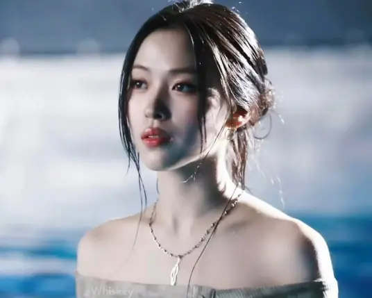

申留真（Ryujin）

基本信息
| 中文名 | 申留真 | 韩文名 | 류진 | 生日 | 2001-04-17 | 星座 | 白羊座 | 队内担当 | 主Rapper、领舞 | 所属社 | JYP Entertainment |
|---|
外貌与气质
申留真属于高级脸长相，五官棱角分明，长相清冷耐看，属于越看越有味道的类型。脸型优越，眉眼疏离感很强，自带清冷拽姐气质，氛围感直接拉满。身材比例绝佳，肩线好看，穿搭时尚感极强，街头风、酷飒风、清纯风都能完美驾驭。

舞台实力
留真的 Rap 实力非常突出，语速稳、咬字清晰、节奏卡点精准，气场强大自带范儿，舞台上又酷又拽，台风极具个人特色。舞蹈风格随性慵懒又很有力度，舞姿松弛自然，不刻意僵硬，自带独特的慵懒氛围感。舞台表现力极强，表情松弛自然，自带独一份的舞台魅力。
性格与人品
性格直爽真实、三观端正，敢说敢做，不做作、不矫情，活得很通透清醒。外表看起来高冷疏离，内心却非常温柔细腻，很会关心队友，心思细腻体贴。私下性格呆萌搞笑，反差萌超大，外表酷拽拽姐，内里可爱小迷糊，真实不做作，性格接地气又很有魅力。
个人魅力
她最大的魅力就是真实不装，颜值高级、业务能打、性格直爽，又酷又可爱，清冷感和呆萌感并存，独特气质很难被替代，个人风格非常鲜明。